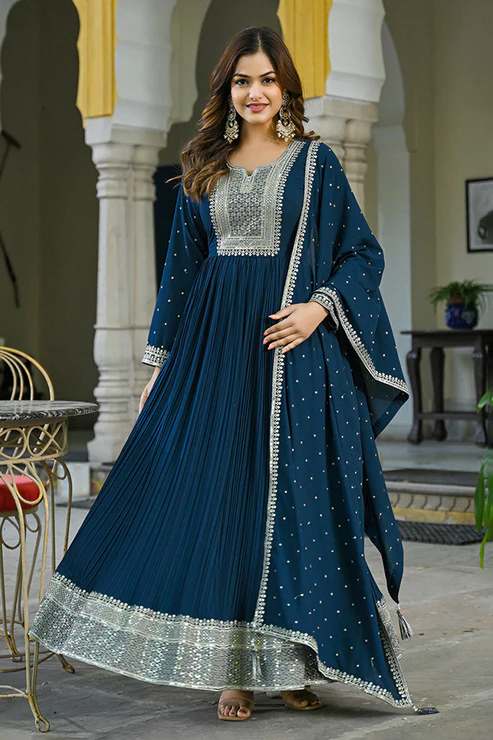
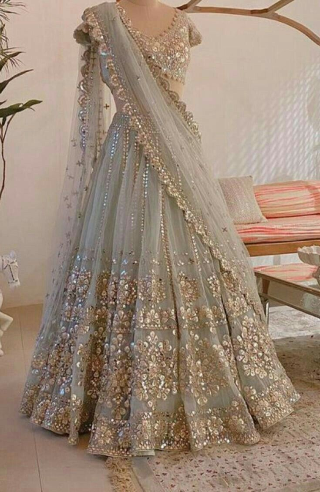

A short-length kurti worn with jeans or leggings.A short kurti is a contemporary, hip-length or thigh-length tunic top, shorter than traditional kurtas,
ending above the knees or at the waist, offering a modern, versatile look popular for casual and everyday wear, styled with leggings, jeans, or palazzos.It's a variation
of the South Asian garment, known for its shorter, more fitted style, contrasting with the longer, looser traditional kurta.
LONG KURTI
A long kurti is a traditional Indian tunic for women that extends below the knees, offering a comfortable yet elegant blend of ethnic and modern style
, available in various cuts like Anarkali, A-line, or straight, and made from fabrics like cotton or silk, suitable for daily wear,
office, or festive occasions when paired with leggings, pants, or even worn as a dress.
ANARKALI

A flared dress-style outfit worn on festivals.An Anarkali dress is a traditional Indian attire featuring a long, frock-style top that's fitted at the bust and
flares out dramatically from the waist, often paired with slim-fitting bottoms like churidars or plazos and a dupatta (scarf). Named after a legendary courtesan
from the Mughal era, it symbolizes grace and royalty, popular for weddings, festivals, and formal events in South Asia, with modern versions offering diverse
lengths and embellishments.
A saree is a traditional unstitched garment worn by women in South Asia, consisting of a long piece of fabric draped around the body. It is typically
worn with a fitted blouse and a petticoat, and the loose end is often draped over the shoulder. The word "saree" comes from the Sanskrit word "śāṭī," meaning
"strip of cloth," and is a significant part of Indian culture, worn for both daily and ceremonial occasions.
LEHENGA

A lehenga is a traditional Indian outfit consisting of three parts: a long, flared skirt called the lehenga, a fitted blouse or choli, and a long scarf or dupatta.
Worn for special occasions like weddings and festivals, it is made from luxurious fabrics and often features intricate embroidery.
LONG DRESS
A long dress is a formal, floor-length dress for women, often worn for special occasions like weddings or galas, typically made from luxurious
fabrics like silk, satin, or chiffon, and coming in various styles, from A-line to mermaid, and can also refer to academic or judicial robes. Essentially, it's a full-length dress designed for elegance and formality,
distinguishing itself from shorter dresses or everyday wear by its length and elaborate design.
Bagyy jeans
Comfortable denim pants for casual wear.What Are The Differences Between Baggy Jeans And Wide Leg Jeans?Baggy jeans are a style of denim
characterized by a loose, relaxed, and oversized fit with generous room through the hips, thighs, and legs, offering maximum comfort and a casual, streetwear-
inspired look. Popularized in the '90s by hip-hop and skate culture, they feature a roomy cut, lower crotch, and wider leg, making them perfect
for effortless, laid-back fashion.
CROP TOP
A short top worn with jeans or skirts.A crop top is a short shirt, blouse, or other upper-body garment that is cut shorter than a traditional top, intentionally
revealing the wearer's midriff, stomach, or navel, and is popular in women's and sometimes men's fashion for creating trendy looks.